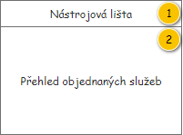
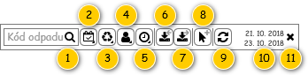
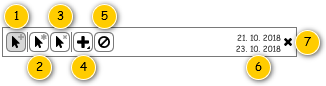
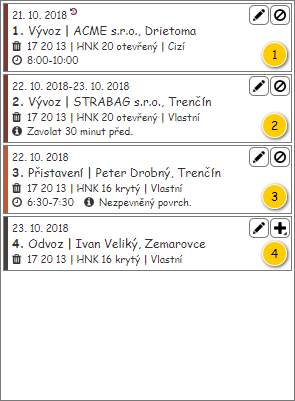
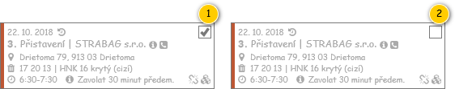
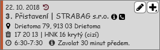
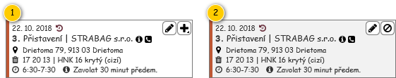

Stručný popis
Přehled Objednaných služeb slouží k zobrazení Objednaných služeb pro potřeby plánování, které odpovídají nastavení provedeném v nástrojové liště.
Uživatelské rozhraní
Rozložení
Drátový diagram

Přehled UI komponent
| Callout | Skupina |
|---|---|
| 1 | Nástrojová lišta |
| 2 | Přehled objednaných služeb |
Nástrojová lišta
Drátový diagram

Přehled UI komponent
Pokud uživatel vjede myší na prvek nástrojové lišty, je zobrazen ToolTip. V rámci ToolTipu, pokud není uvedeno jinak, je zobrazen text ve sloupci Komponenta.
| Callout | Komponenta | Nadpis | Typ komponenty | Příklad hodnoty | Hodnota | Výchozí hodnota | Formát | Zpřístupněná | Viditelná | Chování | Validace | Poznámka |
|---|---|---|---|---|---|---|---|---|---|---|---|---|
| 1 | Textový filtr | – | SearchBox
| – | – | – | Pokud není v rámci ovládacího prvku zadán hledaný text, jsou na pozadí (placeholder) vypsány názvy kritérií, podle kterých je filtrováno (viz sloupce Chování). Mezi jednotlivými názvy sloupců je použit oddělovač: „/“. Jejich výčet je následující.
Tento text je zobrazován i v rámci bublinkové nápovědy ovládacího prvku. | Vždy | Vždy. | Psaním filtruje položky dle atributu Kód entity Druh odpadu – atribut entity Druh odpadu entity Vývoz na Likvidační místo – atribut Vývozy na Likvidační místo entity Objednaná nádoba – atribut Objednaná nádoba entity Objednaná služba. Poznámka:
| – | – |
| 2 | Naplánovaní objednaných služeb | – | Button
| – | – | – | – | Vždy | Vždy | Naplánovaní objednaných služeb | – | – |
| 3 | Typ objednaného úkonu | – | Button
| – | – | – | – | Vždy | Pouze pro následující Typy dopravy:
| Typ objednaného úkonu | – | – |
| 4 | Vlastnictví nádoby | – | Button
| – | – | – | – | Vždy | Pouze pro následující Typy dopravy:
| Vlastnictví nádoby | – | – |
| 5 | Přítomnost časového okna | – | Button
| – | – | – | – | Vždy | Vždy | Přítomnost časového okna | – | – |
| 6 | Načíst objednané služby z předchozího dne | – | Button
| – | – | – | – | Vždy | Datum realizace nastavený v hlavní nástrojové liště obrazovky není v minulosti. | – | – | |
| 7 | Načíst objednané služby z dalšího dne | – | Button
| – | – | – | – | Vždy | Datum realizace nastavený v hlavní nástrojové liště obrazovky není v minulosti. | – | – | |
| 8 | Spuštění režimu hromadného plánování | – | ToggleButton
| – | – | – | Tlačítko není v režimu Stisknuto. | Vždy | Datum realizace nastavený v hlavní nástrojové liště obrazovky není v minulosti. V rámci přehledu je právě zobrazena alespoň jedna Objednaná služba. Pokud má uživatel právo na editaci Denního výkonu (EDIT_RP_DAILY_ROUTES, viz Oprávnění na typ entity). | Spustí , na vstup UC nejsou předána žádná data. | – | – |
| 9 | Obnovit data | – | Button
| – | – | – | – | Vždy | Vždy | Načte aktuální data pro přehled. | – | – |
| 10 | Zobrazené období | – | Label | 21. 10. 2018 | Právě zobrazené období | – | – | Pokud došlo k dodatečnému načtení Objednaných služeb, viz Načítání objednaných služeb z předchozích/dalších dní. | – | – | – | |
| 11 | Zrušení rozšířeného období | – | Button
| – | – | – | – | Vždy | Pokud došlo k dodatečnému načtení Objednaných služeb, viz Načítání objednaných služeb z předchozích/dalších dní. | Systém provede odebrání dodatečně načtených Objednaných služeb z přehledu a skrytí textového výpisu právě zobrazeného období – viz Zrušení dodatečně načtených objednaných služeb. | – | – |
Chování
Naplánovaní objednaných služeb
Rozšířený rychlý filtr slouží k filtrování Objednaných služeb podle toho, zda je Objednaná služba přiřazena k některému z Denních výkonů či ne.
V nabídce jsou pak dostupné následující položky:
- Naplánované (Položka denního výkonu != NULL),
- Nenaplánované (Položka denního výkonu == NULL).
Typ objednaného úkonu
Rozšířený rychlý filtr slouží k filtrování Objednaných služeb podle typu Objednaného úkonu, z kterého Objednaná služba vznikla.
Dostupné Typy úkonu jsou pak vyhodnocovány dle několika podmínek, ty si nyní popíšeme…
- Odpovídající záznam je dostupný pro uživatele – hodnota atributu Je k dispozici je nastavena na TRUE.
- Odpovídající záznam je dostupný v rámci právě zvoleného Typu dopravy (specifikace je uvedena v rámci atributu Technická specifikace odpovídajícího Typu dopravy).
Poznámka: Pokud je pro zvolený Typ dopravy dostupný pouze jeden typ úkonu, není možné použít tento filtr (Lisovací vozidlo, Cisterna).
Vlastnictví nádoby
Rozšířený rychlý filtr slouží k filtrování Objednaných služeb podle hodnoty atributu Vlastní nádoba entity Objednaná nádoba, ve které je obsažen Objednaný úkonu, z kterého Objednaná služba vznikla.
V nabídce jsou pak dostupné následující položky:
- Vlastní (Vlastní nádoba == TRUE),
- Cizí (Vlastní nádoba == FALSE).
Poznámka: Pro Valník není možné použít tento filtr.
Přítomnost časového okna
Rozšířený rychlý filtr slouží k filtrování Objednaných služeb podle toho, zda je realizace Objednané služby omezena časovým oknem. Filtrování bude probíhat dle atributů Čas realizace od a Čas realizace do entity Objednaná služba.
V nabídce jsou pak dostupné následující položky:
- Má časové okno (Čas realizace od != 0:00 || Čas realizace do != 23:59),
- Nemá časové okno (Čas realizace od == 0:00 && Čas realizace do == 23:59).
Načítání objednaných služeb z předchozích/dalších dní
Po stisknutí tlačítka pro dodatečné načtení Objednaných služeb za předchozí/následující den k právě zobrazenému období dojde k zobrazení Objednaných služeb za aktuálně nastavené období – je spuštěn , na vstup UC jsou předány následující hodnoty:
- Provozovna: Provozovna vybraná v nástrojové liště obrazovky pro plánování Denních výkonů.
- Typ dopravy: Typ dopravy vybraný v nástrojové liště obrazovky pro plánování Denních výkonů.
- Datum, pro který mají být dočteny Objednané služby (poznámka: pokud zatím nebyly dodatečně načteny žádné Objednané služby, Datum od i Datum do je rovno Datu realizace vybranému v nástrojové liště obrazovky pro plánování Denních výkonů):
- Načíst objednané služby z předchozího dne: Datum od právě zobrazeného období - 1 den.
- Načíst objednané služby z dalšího dne: Datum do právě zobrazeného období + 1 den.
- Objednané služby: Objednané služby načtené v tomto přehledu (kolekce).
Poznámka: Mohou být zobrazeny i Objednané služby, které mají datum realizace odlišné ode dne plánování, a to bez ohledu na právě zobrazené období – viz Zobrazení služeb nacházejících se mimo den plánování.
Jakmile dojde k dodatečnému načtení alespoň jednoho dalšího dne, je zobrazeno načtené období v nástrojové liště přehledu Objednaných služeb a tlačítko ke zrušení dodatečně načtených dní.
Dodatečné načtení může být způsobeno buď stisknutím tlačítka pro načtení předchozího/dalšího dne, případně předáním z parametru URL adresy.
Jakmile uživatel zruší zobrazení dodatečně načtených dní, je skryto jak pole pro zobrazené období, tak tlačítko pro zrušení dodatečně načtených dní.
Zrušení dodatečně načtených objednaných služeb
Po stisknutí tlačítka pro zrušení dodatečně načtených objednaných služeb dojde k odebrání takových Objednaných služeb, které byly načteny až dodatečně v rámci Načítání objednaných služeb z předchozích/dalších dní.
- Systém provede odebrání dodatečně načtených Objednaných služeb – spustí , na vstup UC jsou předány následující hodnoty:
- Provozovna: Provozovna vybraná v nástrojové liště obrazovky pro plánování Denních výkonů.
- Datum realizace: Datum realizace vybrané v nástrojové liště obrazovky pro plánování Denních výkonů.
- Typ dopravy: Typ dopravy vybraný v nástrojové liště obrazovky pro plánování Denních výkonů.
- Systém skryje komponenty související s dodatečně načtenými Objednanými službami dle popisu v rámci přehledu UI komponent.
Nástrojová lišta v režimu hromadného plánování
V rámci přehledu Objednaných služeb je možné spustit režim hromadného plánování. V tomto režimu se pak změní obsah nástrojové lišty a rozložení jednotlivých Panelů objednané služby.
Drátový diagram

Přehled UI komponent
Pokud uživatel vjede myší na prvek nástrojové lišty, je zobrazen ToolTip. V rámci ToolTipu, pokud není uvedeno jinak, je zobrazen text ve sloupci Komponenta.
Poznámka: Pokud uživatel nemá oprávnění ke spuštění dostupných akcí, nemůže režim hromadného plánování ani spustit.
| Callout | Komponenta | Nadpis | Typ komponenty | Příklad hodnoty | Hodnota | Výchozí hodnota | Formát | Zpřístupněná | Viditelná | Chování | Validace | Poznámka |
|---|---|---|---|---|---|---|---|---|---|---|---|---|
| 1 | Ukončení režimu hromadného plánování | – | ToggleButton
| – | – | – | Tlačítko je v režimu Stisknuto. | Vždy | Vždy | Spustí , na vstup UC nejsou předána žádná data. | – | – |
| 2 | Označit vše | – | Button
| – | – | – | – | Vždy | Vždy | Označí všechny právě zobrazené Objednané služby v přehledu. | – | V režimu hromadného plánování je možné označit pouze takové Objednané služby, které vyhovují právě nastaveným filtrům přehledu. |
| 3 | Zrušit označení | – | Button
| – | – | – | – | Vždy | Vždy | Zruší označení všech právě zobrazených Objednaných služeb v přehledu. | – | V režimu hromadného plánování je možné označit pouze takové Objednané služby, které vyhovují právě nastaveným filtrům přehledu. |
| 4 | Přidání na denní výkon | – | Button
| – | – | – | – | Vždy | Pokud je vybrána alespoň jedna nenaplánovaná Objednaná služba – atribut Stav nabývá hodnoty K naplánování. | Spustí , na vstup UC jsou předány následující hodnoty:
Na vstup uvedeného UC jsou vloženy Objednané služby splňující všechny dále uvedené podmínky zároveň:
| – | – |
| 5 | Odebrání z denního výkonu | – | Button
| – | – | – | – | Vždy | Pokud je vybrána alespoň jedna naplánovaná Objednaná služba – atribut Stav nabývá hodnoty Naplánovaná. | Spustí , na vstup UC jsou předány následující hodnoty:
| – | – |
| 6 | Zobrazené období | – | Label | 21. 10. 2018 23. 10. 2018 | Právě zobrazené období | – | Vždy | Pokud došlo k dodatečnému načtení Objednaných služeb, viz Načítání objednaných služeb z předchozích/dalších dní. | – | – | – | |
| 7 | Zrušení rozšířeného období | – | Button
| – | – | – | – | Vždy | Pokud došlo k dodatečnému načtení Objednaných služeb, viz Načítání objednaných služeb z předchozích/dalších dní. | Systém nejprve ukončí režim hromadného plánování a následně provede odebrání dodatečně načtených Objednaných služeb z přehledu a skrytí textového výpisu právě zobrazeného období.
| – | – |
Přehled objednaných služeb
Přehled Objednaných služeb obsahuje jednotlivé Panely objednaných služeb, které jsou popsány dále. Tato část tak slouží především pro obecný popis přehledu.
Objednané služby jsou seřazeny vzestupně dle data realizace, tedy od nejstarších po nejnovější. Objednané služby se stejným datem realizace jsou seřazeny dle času, kdy byly systémem vygenerovány.
Poznámka: Rozložení Panelů objednané služby zobrazených na obrázku je pouze ilustrativní, v rámci vývoje došlo k jeho změnám. Cílem uvedeného náčrtu je především ukázat, jaké typy Objednaných služeb se z pohledu data realizace mohou v přehledu vyskytnout.
Drátový diagram

Přehled UI komponent
| Callout | Panel objednané služby |
|---|---|
| 1 | Panel zobrazující Objednanou službu, která má datum realizace v minulosti, ale stále není realizována – je tedy graficky zvýrazněna. |
| 2 | Panel zobrazující Objednanou službu, která má datum realizace jako časové okno. Nastavené datum plánování denních výkonů tak leží uvnitř tohoto časového okna. |
| 3 | Panel zobrazující Objednanou službu, která má datum realizace shodný s nastaveným datem plánování denních výkonů. |
| 4 | Panel zobrazující Objednanou službu, která má datum realizace různé od nastaveného data plánování denních výkonů – byla tedy dodatečně načtena. |
Panel objednané služby
Panel vychází z 101UI05: Panel objednané služby, tomu odpovídá i dále uvedený popis. Zobrazeny jsou pak informace o Objednané službě získané na vstupu UC (vstupní parametr Objednaná služba).
Drátový diagram

Přehled UI komponent
| Callout | Komponenta | Nadpis | Typ komponenty | Příklad hodnoty | Hodnota | Výchozí hodnota | Formát | Zpřístupněná | Viditelná | Chování | Validace | Poznámka |
|---|---|---|---|---|---|---|---|---|---|---|---|---|
| 1 | Barevné rozlišení panelu | – | – | #BD5734 | Entita Objednaný úkonu – atribut Objednaný úkon entity Objednaná služba. | – | Dle hodnoty uvedeného atributu je zvolena konkrétní barva, viz použité barvy a ikony formuláře pro plánování denních výkonů, položka Typ úkonu. | – | Vždy | – | – | – |
| 2 | Datum realizace | – | Label | 22. 10. 2018 | Entita Objednaná služba. | – | Pokud jsou si obě data rovna: | – | Vždy. | – | – | V rámci porovnávání dat realizace není brána v potaz složka s časem. |
| 3 | Indikace nerealizované služby v minulosti | – | – | – | Pokud jsou splněny všechny dále uvedené podmínky: TRUE.
Jinak: FALSE. | – |
| – | Pokud je získaná hodnota rovna TRUE. | Pokud je zobrazena ikona a uživatel na ni najede myší, je zobrazena bublinková nápověda s pevně daným textem:
| – | – |
| 4 | Pořadí objednané služby | – | Label | 3. | Pořadové číslo Objednané služby v rámci tohoto přehledu. | – | Viz obecný popis. | – | Vždy | – | – | Pořadové číslo je pouze informativní údaj pro lepší orientaci v rámci celé obrazovky. Popis toho, jak jsou pořadová čísla získána a používána, je uveden samostatně: Pořadová čísla zobrazených objednaných služeb (viz ). |
| 5 | Identifikace objednaného úkonu | – | Label | Přistavení | STRABAG s.r.o. | Entita Objednaný úkon – atribut Objednaný úkon entity Objednaná služba. | – | Identifikace objednaného úkonu | – | Vždy | – | – | – |
| 6 | Identifikace objednávky | – | – | Objednávka: 1131-001028 | Entita Objednávka – atribut Objednávka entity Položka objednávky – atribut Položka objednávky entity Objednaná nádoba – atribut Objednaná nádoba entity Objednaný úkon – atribut Objednaný úkon entity Objednaná služba. | – | Objednávka: <Číslo objednávky>
| – | Pokud je hodnota různá od NULL. | Pokud je zobrazena ikona a uživatel na ni najede myší, je zobrazena bublinková nápověda s uvedenou hodnotou. | – | Hodnota se zobrazuje po najetí myši na ikonu ve formě bublinkové nápovědy. |
| 7 | Poznámka k místu realizace | – | – | Nezpevněný povrch. | Entita Položka objednávky – atribut Položka objednávky entity Objednaná nádoba – atribut Objednaná nádoba entity Objednaný úkon – atribut Objednaný úkon entity Objednaná služba. | – |
| – | Pokud je hodnota různá od NULL. | Pokud je zobrazena ikona a uživatel na ni najede myší, je zobrazena bublinková nápověda s uvedenou hodnotou. | – | Hodnota se zobrazuje po najetí myši na ikonu ve formě bublinkové nápovědy. |
| 8 | Kontakt k místu realizace | – | – | Pan Konečný, 0902 123 456. | Entita Položka objednávky – atribut Položka objednávky entity Objednaná nádoba – atribut Objednaná nádoba entity Objednaný úkon – atribut Objednaný úkon entity Objednaná služba. | – |
| – | Pokud je hodnota různá od NULL. | Pokud je zobrazena ikona a uživatel na ni najede myší, je zobrazena bublinková nápověda s uvedenou hodnotou. | – | Hodnota se zobrazuje po najetí myši na ikonu ve formě bublinkové nápovědy. |
| 9 | Adresa místa realizace | Ikona: ra-location | Label | Drietoma 79, 913 03 Drietoma | Entita Adresa – atribut Adresa entity Lokace objednané služby – atribut Lokace objednané služby entity Objednaná služba. Je pak vybrána v pořadí první Lokace objednané služby typu Místo realizace (atribut Typ lokace). | – | Pokud není dostupné Číslo orientační:
Pokud není dostupné Číslo popisné:
Pokud není Lokace objednané služby k dispozici:
Pokud nastane situace, že délka hodnoty přesahuje délku řádku v rámci panelu, je zobrazena pouze taková část textu, která se vejde právě na jeden řádek. Na konci zobrazené části textu je pak vložen znak „…“ (ALT+0133), který naznačuje, že není zobrazen celý text. Po najetí myši na tento řádek dojde k zobrazení bublinkové nápovědy s úplným textem. | – | Je nalezena Lokace objednané služby. | – | – | – |
| 10 | Identifikace objednané nádoby | Ikona: ra-trash | Label | 17 20 13 | HNK 16 krytý (cizí) | Entita Objednaná služba. | – | Identifikace objednané nádoby | – | Vždy | – | – | – |
| 11 | Časové okno | Ikona: ra-clock | Label | 6:30-7:30 | Entita Objednaná služba. | – | <Čas realizace od>-<Čas realizace od> | – | Pokud je splněna alespoň jedna z uvedených podmínek:
| – | – | – |
| 12 | Poznámka | Ikona: ra-info-full | Label | Zavolat 30 minut předem. | Entita Objednaná služba. | – | Pokud nastane situace, že délka hodnoty přesahuje délku řádku v rámci panelu, je zobrazena pouze taková část textu, která se vejde právě na jeden řádek. Na konci zobrazené části textu je pak vložen znak „…“ (ALT+0133), který naznačuje, že není zobrazen celý text. Po najetí myši na tento řádek dojde k zobrazení bublinkové nápovědy s úplným textem. | – | Pokud je hodnota různá od NULL. | – | – | – |
| 13 | Upravit objednanou službu | – | Button
| – | – | – |
| Vždy | Pokud je Objednaná služba v jednom z uvedených stavů (atribut Stav):
Pokud má uživatel právo na editaci Objednané služby (EDIT_RP_SERVICE_ORDERS, viz Oprávnění na typ entity). | Spustí , na vstup UC jsou předány následující hodnoty:
| – | Pokud není tlačítko zobrazeno, nezabírá žádný volný prostor. |
| 14 | Přidání na denní výkon | – | Button
| – | – | – |
| Vždy | Pokud je Objednaná služba v jednom z uvedených stavů (atribut Stav):
Datum realizace nastavený v hlavní nástrojové liště obrazovky není v minulosti. Pokud má uživatel právo na editaci Denního výkonu (EDIT_RP_DAILY_ROUTES, viz Oprávnění na typ entity). | Spustí , na vstup UC jsou předány následující hodnoty:
| – | Pokud není tlačítko zobrazeno, nezabírá žádný volný prostor. |
| 15 | Odebrání z denního výkonu | – | Button
| – | – | – |
| Vždy | Pokud je Objednaná služba v jednom z uvedených stavů (atribut Stav):
Datum realizace nastavený v hlavní nástrojové liště obrazovky není v minulosti. Pokud má uživatel právo na editaci Denního výkonu (EDIT_RP_DAILY_ROUTES, viz Oprávnění na typ entity). | Spustí , na vstup UC jsou předány následující hodnoty:
| – | Pokud není tlačítko zobrazeno, nezabírá žádný volný prostor. |
| 16 | Lokace objednané služby | – | – | – | Pokud jsou splněny všechny dále uvedené podmínky zároveň: TRUE.
Jinak: FALSE. | – |
| – | Pokud je získaná hodnota rovna TRUE. | Pokud je zobrazena ikona a uživatel na ni najede myší, je zobrazena bublinková nápověda s obsaženými Lokacemi objednané služby, viz Kontextová nabídka s lokacemi objednané služby. | – | – |
| 17 | Indikace rozdělení objednané služby | – | – | – | Pokud je splněna alespoň jedna z dále uvedených podmínek: TRUE.
Jinak: FALSE. | – |
| – | Pokud je získaná hodnota rovna TRUE. | Pokud je zobrazena ikona a uživatel na ni najede myší, je zobrazena bublinková nápověda s odpovídajícími Objednanými službami spolu s obsaženými Lokacemi objednané služby, viz Kontextová nabídka se souvisejícími objednanými službami. | – | Indikace je společná pro obě akce (rozdělení, vytvoření MDU). |
Chování
Kontextová nabídka s lokacemi objednané služby
V případě, kdy není Objednaná služba žádným způsobem rozdělena (rozdělení, vytvoření MDU), je pro ni dostupná kontextová nabídka se základními informacemi o obsažených Lokacích objednané služby. Náhled je uveden na přiloženém obrázku.
Poznámka: Pokud není Objednaná služba dána množinou Lokací objednané služby, nabídka není k dispozici (Objednaná služba může být specifikována i časovým rozmezím).

V rámci kontextové nabídky jsou pak obsaženy takové Lokace objednané služby, které splňují všechny dále uvedené podmínky zároveň (atribut Lokace objednané služby odpovídající Objednané služby):
- atribut Typ lokace je nastaven na hodnotu Místo realizace, Likvidační místo, Výchozí likvidační místo, Provozovna nebo Místo dočasného uložení (viz Typ lokace objednané služby).
Každá Lokace objednané služby je pak zobrazena na samostatném řádku, formát výpisu je následující:
| Položka | Příklad hodnoty | Hodnota | Formát | Poznámka |
|---|---|---|---|---|
| Typ lokace | MR | Entita Lokace objednané služby. | Zobrazena je pak zkratka, která odpovídá konkrétnímu Typu lokace objednané služby:
| – |
| Adresa lokace | Palackého 28/A | Entita Adresa – atribut Adresa entity Lokace objednané služby. | Pokud není k dispozici hodnota pro alespoň jeden z uvedených atribut, není jejich oddělovač zobrazen:
| – |
| Akce v lokaci | Vyzvednout | Entita Lokace objednané služby. | – |
Kontextová nabídka se souvisejícími objednanými službami
V případě, kdy byla Objednaná služba nějakým způsobem rozdělena (rozdělení, vytvoření MDU), je pro ni dostupná kontextová nabídka se základními informacemi jak o souvisejících Objednaných službách, tak o v nich obsažených Lokacích objednané služby. Náhled je uveden na přiloženém obrázku.

Obsaženy jsou pak všechny Objednané služby, které souvisí s odpovídající Objednanou službou – ty jsou nalezeny následovně:
- Systém nalezne všechny předcházející Objednané služby: postupuje dle atributu Předchozí objednaná služba do doby, kdy nalezená Objednaná služba v rámci uvedeného atributu obsahuje NULL.
- Systém nalezne všechny následující Objednané služby: postupuje dle atributu Následující objednaná služba do doby, kdy nalezená Objednaná služba v rámci uvedeného atributu obsahuje NULL.
V rámci každé nalezené Objednané služby jsou následně určeny takové Lokace objednané služby, které mají být v kontextové nabídce také zobrazeny (atribut Lokace objednané služby odpovídající Objednané služby). Ty musí splňovat všechny dále uvedené podmínky zároveň:
- atribut Typ lokace je nastaven na hodnotu Místo realizace, Likvidační místo, Výchozí likvidační místo, Provozovna nebo Místo dočasného uložení (viz Typ lokace objednané služby).
Když máme k dispozici potřebné informace, můžeme přejít k rozložení samotné kontextové nabídky. Každá Objednaná služba pak tvoří samostatnou skupinu, v rámci které jsou zobrazeny následující informace:
- Informace o Objednané službě: Její pořadí spolu s informacemi o odpovídajícím Denním výkonu (pokud se jedná o již naplánovanou Objednanou službu).
- Obsažené Lokace objednané služby: Základní informace jako typ, adresa a prováděná akce.
Poznámka: Objednaná služba, pro kterou je zobrazena kontextová nabídka, ze zvýrazněna (tučný řez písma).

V závěru se dostáváme k podrobnému popisu skupiny představující Objednanou službu, viz tabulka.
| Položka | Příklad hodnoty | Formát | Dílčí položka | Hodnota | Formát | Poznámka |
|---|---|---|---|---|---|---|
| 1 | 6.3: 5AX 2185 (14. 5. 2020) | Pořadí v rámci přehledu | Odpovídá pořadí v rámci Panelu objednané služby (komponenta 3). | Hodnota je použita pro všechny Objednané služby zobrazené v kontextové nabídce. Popis, jakým je hodnota získána, je uveden samostatně: Pořadová čísla zobrazených objednaných služeb (viz ). | ||
| Pořadí v rámci objednané služby | Odpovídá pořadí získanému v rámci hledání souvisejících Objednaných služeb (viz dříve). | Pořadí je dáno vazbami mezi Objednanými službami (atributy Předchozí objednaná služba a Následující objednaná služba). | ||||
| Vozidlo | Entita Denní výkon – atribut Denní výkon entity Položka denního výkonu – atribut Položka denního výkonu entity Objednaná služba. | Pokud není hodnota k dispozici a zároveň je k Dennímu výkonu přiřazeno Vozidlo (atribut Vozidlo), je zobrazen zástupný text: licensePlatePlaceholderText, viz Konfigurační hodnoty. Pokud není hodnota k dispozici, je zobrazen zástupný text:
| – | |||
| Datum realizace | Entita Denní výkon – atribut Denní výkon entity Položka denního výkonu – atribut Položka denního výkonu entity Objednaná služba. | Pokud není hodnota k dispozici, není zobrazen žádný text. | Pokud není hodnota k dispozici, nejsou zobrazeny ani odpovídající závorky. | |||
| 2 | MR: Palackého 28/A (Vyzvednout) |
| Typ lokace | Entita Lokace objednané služby – atribut Lokace objednané služby entity Objednaná služba. | Zobrazena je pak zkratka, která odpovídá konkrétnímu Typu lokace objednané služby:
| – |
| Adresa lokace | Entita Adresa – atribut Adresa entity Lokace objednané služby – atribut Lokace objednané služby entity Objednaná služba. | Pokud není k dispozici hodnota pro alespoň jeden z uvedených atribut, není jejich oddělovač zobrazen:
| – | |||
| Akce v lokaci | Entita Lokace objednané služby – atribut Lokace objednané služby entity Objednaná služba. | – |
Poznámka: Získání souvisejících Objednaných služeb a způsob číslování je naznačen na obrázku (Objednaná služba, pro kterou je zobrazena kontextová nabídka, je zvýrazněna).

Panel objednané služby v režimu hromadného plánování
V rámci přehledu Objednaných služeb je možné spustit režim hromadného plánování. V tomto režimu se pak změní i rozložení panelu Objednané služby. Změna rozložení je pak provedena následovně:
- Jsou skryta tlačítka pro provádění akcí nad Objednanou službou (komponenty 13, 14, 15).
- Je změněna barva veškerého obsahu kromě barevného rozlišení panelu (komponenta 1), viz použité barvy a ikony formuláře pro plánování denních výkonů, položka Text v režimu hromadného plánování.
- Je zobrazeno zaškrtávací tlačítko (CheckBox) pro označení Objednané služby, zarovnání vpravo nahoře.
Po ukončení režimu hromadného plánování je rozložení vráceno do původního stavu.
Panel tedy může nabývat dvou stavů:
- Označený – odpovídající Objednaná služba bude zahrnuta v rámci jednotlivých akcí hromadného plánování.
- Neoznačený – výchozí stav.

Označení objednané služby
Pokud dojde k označení Objednané služby, je zvýrazněn i odpovídající panel. Označení Objednané služby pak může být provedeno několika způsoby:
- Uživatel klikne levým tlačítkem myši na plochu panelu Objednané služby (mimo tlačítka).
- Systém označí panel Objednané služby jako reakci na určitou situaci (označení Objednané služby v diagramu Denního výkonu a podobně).
Poznámka:
- Pokud není panel Objednané služby po označení zobrazen v přehledu (je mimo právě zobrazenou část – vzhledem k pozici posuvníku), dojde k nastavení posuvníku tak, aby byl označený panel Objednané služby zobrazen jako první.
- Pokud je panel Objednané služby umístěn jako jeden z posledních v rámci přehledu, a není tak možné splnit předcházející požadavek, je posuvník nastaven na své maximum.
- Pokud není panel Objednané služby viditelný z důvodu nastavení filtrů v rámci přehledu, není pozice posuvníku měněna.
Pokud je spuštěn režim hromadného plánování, není možné označovat Objednané služby běžným (tedy tímto) způsobem.
Označený panel Objednané služby je pak graficky zvýrazněn – dojde ke změně barvy pozadí panelu, viz použité barvy a ikony formuláře pro plánování denních výkonů, položka Zvýraznění objednané služby/Označená.

Zvýraznění dle stavu objednané služby
Jednotlivé panely Objednané služby jsou zvýrazněny dle stavu konkrétní Objednané služby (atribut Stav) – dojde ke změně barvy pozadí panelu, viz použité barvy a ikony formuláře pro plánování denních výkonů:
- K naplánování: Zvýraznění objednané služby/Nenaplánovaná.
- Jinak: Zvýraznění objednané služby/Naplánovaná.

Pokud dojde k označení Objednané služby, je uvedené barevné zvýraznění ignorováno – označené Objednané služby jsou zvýrazněny odlišně.
Kontextová nabídka
Kontextová nabídka vychází z jejího obecného popisu (viz 700UI09: Kontextová nabídka), její struktura je pak uvedena v tabulce.
Nabídka je zobrazena po stisknutí pravého tlačítka myši v rámci panelu Objednané služby. To je však podmíněno dalšími omezeními, musí být splněný všechny uvedené podmínky:
- Je viditelná alespoň jedna z uvedených položek.
- Uživatel má právo na editaci Denního výkonu (EDIT_RP_DAILY_ROUTES, viz Oprávnění na typ entity).
| Pořadí | Typ položky | Nadpis | Funkce | Zpřístupněná | Viditelná | Chování | Poznámka |
|---|---|---|---|---|---|---|---|
| 1 | Rozbalovací nabídka | Přidat na denní výkon | Přiřazení Objednané služby na Denní výkon. | Vždy | Pokud se Objednaná služba nachází v jednom z uvedených stavů (atribut Stav):
| Obsahuje nabídku popsanou v rámci Přiřazení pomocí tlačítka, která je zobrazena po kliknutí na tuto položku. | – |
| 2 | Tlačítko | Odebrat z denního výkonu | Odebrání Objednané služby z Denního výkonu. | Pokud je Objednaná služba naplánována na Denní výkon, který se nachází v jednom z uvedených stavů (atribut Stav entity Denní výkon – atribut Denní výkon entity Položka denního výkonu – atribut Položka denního výkonu entity Objednaná služba):
| Pokud se Objednaná služba nachází v jednom z uvedených stavů (atribut Stav):
| Spustí , na vstup UC jsou předány následující hodnoty:
| – |
| 3 | Tlačítko | Sloučit objednanou službu | Sloučení Objednané služby, která byla nějakým způsobem rozdělena (rozdělení, vytvoření MDU). | Vždy | Pokud se Objednaná služba nachází v jednom z uvedených stavů (atribut Stav):
Pokud jsou splněny vstupní podmínky volaného UC. | Spustí , na vstup UC jsou předány následující hodnoty:
| UC může být spuštěn i ve chvíli, kdy není možné požadovanou akci dokončit. V takovou chvíli je v rámci formuláře totiž zobrazen důvod, proč není možné provést sloučení Objednané služby. |
Obecné chování
Přiřazení objednaných služeb na denní výkon
V rámci přehledu Objednané služby je možné provést naplánování požadované Objednané služby na existující či vytvořený Denní výkon, a to hned několika způsoby:
- Pomocí režimu Drag&Drop, tedy „chytnutím a přetažením“ pomocí myši.
- Pomocí odpovídajících tlačítek.
Přiřazení v režimu Drag&Drop
V rámci režimu Drag&Drop může uživatel plánovat Objednané služby prostým chycením (stisknutí levého tlačítka myši a jeho držením) a přetažením na požadovaný Denní výkon. Funkce je pak dostupná, pokud jsou splněny dále uvedené podmínky:
- Je umožněno plánování Denních výkonů – nejedná se o Denní výkony s datem realizace v minulosti.
- Uživatel má oprávnění k plánování Denních výkonů.
- Objednaná služba zatím není naplánována na žádný Denní výkony, je tedy ve stavu K naplánování (atribut Stav).
Poznámka: Jednotlivá omezení jsou uvedena v popisu odpovídajících UC.
Popis chování je pak následující:
- Uživatel klikne levým tlačítkem na požadovanou Objednanou službu v přehledu, tlačítko pak drží stisknuté.
- Systém spustí režim plánování pomocí Drag&Drop – zvýrazní prvky, na které je možné Objednanou službu „přetáhnout“.
- Uživatel najede myší na požadované místo a uvolní levé tlačítko myši.
- Systém provede akce dle uživatelem zvoleného místa:
- Pokud uživatel zvolil diagram konkrétního Denního výkonu v přehledu: Systém vloží Objednanou službu na požadovaný Denní výkon, spustí , na vstup UC jsou pak předány následující hodnoty:
- Objednaná služba: uživatelem zvolená Objednaná služba
- Denní výkon: uživatelem zvolený Denní výkon.
- Pokud uživatel zvolil přehled Objednaných služeb: Nejsou prováděny žádné další akce (jedná se o Objednanou službu, která není naplánována na žádný Denní výkon, proto vložení mezi nenaplánované Objednané služby neprovede žádné další akce).
- Jinak: Nejsou prováděny žádné další akce (nebyla zvolena žádná z dostupných DROP zón).
- Pokud uživatel zvolil diagram konkrétního Denního výkonu v přehledu: Systém vloží Objednanou službu na požadovaný Denní výkon, spustí , na vstup UC jsou pak předány následující hodnoty:
- Systém ukončí režim plánování pomocí Drag&Drop – zruší zvýraznění prvků, na které je možné Objednanou službu „přetáhnout“.
Přiřazení pomocí tlačítka
Dále je možné použít k naplánování Objednané služby tlačítko, které je doplněno o kontextovou nabídku pro výběr požadovaného Denního výkonu. Samotné tlačítko je znázorněno následovně:
- Ikona:
- ra-plus,
- ra-expand.
- Barva pruhu: #c59ee3.
Kontextová nabídka vychází z jejího obecného popisu (viz 700UI09: Kontextová nabídka), její struktura je pak následující.

Jednotlivé položky nabídky jsou popsány dále, viz tabulka.
| Callout | Typ položky | Funkce | Hodnota | Formát | Poznámka |
|---|---|---|---|---|---|
| 1 | Tlačítko | Vložení na nově vytvořený Denní výkon. | – | Pevně daný text:
| Konkrétní chování je popsáno v rámci použití této funkčnosti. |
| 2 | Oddělovač | – | – | – | – |
| 3 | Tlačítko | Vložení na existující Denní výkon. | Entita Denní výkon. Dostupné Denní výkony vychází z těch v Přehledu denních výkonů této obrazovky (tomu odpovídá i pořadí jednotlivých položek). Omezeny jsou pak jejich stavem, dostupné jsou takové Denní výkony, které se nachází v jednom z dále uvedených stavů:
Poznámka: Na Denní výkony ve stavu Vypůjčený není možné plánovat, nejsou tedy dostupné v rámci kontextové nabídky. | Vložit na Pokud není hodnota atributu Textová identifikace vozidla k dispozici a zároveň je k Dennímu výkonu přiřazeno Vozidlo (atribut Vozidlo), je zobrazen zástupný text: licensePlatePlaceholderText, viz Konfigurační hodnoty. Pokud není hodnota atributu Textová identifikace vozidla k dispozici a zároveň není splněna předchozí podmínka:
Zástupný text je pak odpovídá tomu v rámci Přehledu denních výkonů. | Konkrétní chování je popsáno v rámci použití této funkčnosti. |
Odebrání objednaných služeb z denních výkonů
V rámci přehledu Objednané služby je možné provést zrušení naplánování požadované Objednané služby z existujícího Denního výkonu, a to hned několika způsoby:
- Pomocí režimu Drag&Drop, tedy „chytnutím a přetažením“ pomocí myši.
- Pomocí odpovídajících tlačítek.
Odebrání v režimu Drag&Drop
V rámci režimu Drag&Drop může uživatel odebírat Objednané služby prostým chycením (stisknutí levého tlačítka myši a jeho držením) a přetažením zpět do přehledu Objednaných služeb. Funkce je pak dostupná, pokud jsou splněny dále uvedené podmínky:
- Je umožněno plánování Denních výkonů – nejedná se o Denní výkony s datem realizace v minulosti.
- Uživatel má oprávnění k plánování Denních výkonů.
Poznámka:
- Jednotlivá omezení jsou uvedena v popisu odpovídajících UC.
- Tok událostí začíná v rámci diagramu Denního výkonu, tam je popsáno i samotné chování (viz ). Zde je funkčnost uvedena především pro úplnost vzhledem ke struktuře dokumentace této obrazovky.
Popis chování je pak následující:
- Uživatel klikne levým tlačítkem na požadovanou Objednanou službu v přehledu Denních výkonů, tlačítko pak drží stisknuté.
- Systém spustí režim plánování pomocí Drag&Drop – zvýrazní prvky, na které je možné Objednanou službu „přetáhnout“.
- Uživatel najede myší na požadované místo a uvolní levé tlačítko myši.
- Systém provede akce dle uživatelem zvoleného místa:
- Pokud uživatel zvolil diagram konkrétního Denního výkonu v přehledu: Systém vloží Objednanou službu na požadovaný Denní výkon.
- Pokud uživatel zvolil přehled Objednaných služeb: Systém odebere Objednanou službu z Denního výkonu.
- Jinak: Nejsou prováděny žádné další akce (nebyla zvolena žádná z dostupných DROP zón).
- Systém ukončí režim plánování pomocí Drag&Drop – zruší zvýraznění prvků, na které je možné Objednanou službu „přetáhnout“.
Odebrání pomocí tlačítka
Dále je možné použít k odebrání Objednané služby z Denního výkonu tlačítko, to je znázorněno pomocí ikony:
- Ikona: ra-cross.
- Barva pruhu: #c59ee3.
Konkrétní chování je pak popsáno v rámci použití této funkčnosti.
Grafický návrh
Revize
23. 2. 2024: Tomáš Nadrchal
| Odkaz | Stručný popis změny/doplnění |
|---|---|
| Typ objednaného úkonu | Revize dostupných typů úkonu (naznačeno modře). |
| Kontextová nabídka s lokacemi objednané služby | Doplněno chování pro nový typ lokace objednané služby (naznačeno modře). |
| Kontextová nabídka se souvisejícími objednanými službami | Doplněno chování pro nový typ lokace objednané služby (naznačeno modře). |
3. 3. 2023: Tomáš Nadrchal
| Odkaz | Stručný popis změny/doplnění |
|---|---|
| Typ objednaného úkonu | Revize chování pro nové typy dopravy (naznačeno modře). |
10. 3. 2022: Tomáš Nadrchal
| Odkaz | Stručný popis změny/doplnění |
|---|---|
| Nástrojová lišta | Revize kontextové nabídky textového filtru (naznačeno modře). ID-054 |
29. 3. 2021: Tomáš Nadrchal
Provedeny změny v rámci celého dokumentu (naznačeno modře). Viz ID-040: Násobné rozdělení objednané služby.
23. 3. 2020: Tomáš Nadrchal
| Odkaz | Stručný popis změny/doplnění |
|---|---|
| Kontextová nabídka | Doplněna omezení pro zobrazení jednotlivých položek i celé nabídky (naznačeno modře). |
22. 9. 2019: Tomáš Nadrchal
| Odkaz | Stručný popis změny/doplnění |
|---|---|
| Nástrojová lišta | Doplněn popis nástrojové lišty pro režim hromadného plánování (naznačeno modře). |
| Nástrojová lišta v režimu hromadného plánování | Doplněn popis nástrojové lišty pro režim hromadného plánování. |
| Panel objednané služby | Doplněn popis panelu Objednané služby (naznačeno modře). |
| Panel objednané služby v režimu hromadného plánování | Doplněn popis panelu Objednané služby pro režim hromadného plánování. |
| Označení objednané služby | Doplněn popis chování při označení Objednané služby. |
| Zvýraznění dle stavu objednané služby | Doplněn popis chování pro zvýraznění již naplánovaných Objednaných služeb. |
| Kontextová nabídka | Provedeny drobné změny v rámci kontextové nabídky (naznačeno modře). |
| Přiřazení objednaných služeb na denní výkon | Zobecnění popisu chování a změna jeho umístění v rámci dokumentu. Případné drobné změny jsou označeny (naznačeno modře). Doplněn popis režimu Drag&Drop, který je již implementován – jedná se tedy o popis stávajícího chování. |
| Odebrání objednaných služeb z denních výkonů | Zobecnění popisu chování a změna jeho umístění v rámci dokumentu. Doplněn popis režimu Drag&Drop, který je již implementován – jedná se tedy o popis stávajícího chování. |
24. 6. 2019: Tomáš Nadrchal
| Odkaz | Stručný popis změny/doplnění |
|---|---|
| Identifikace objednaného úkonu | Doplněna poznámka o zobrazení řádku s popisem Objednaného úkonu (naznačeno modře). |
7. 4. 2019: Tomáš Nadrchal
| Odkaz | Stručný popis změny/doplnění |
|---|---|
| Panel objednané služby | Doplněn popis kontextové nabídky. |
17. 12. 2018: Tomáš Nadrchal
| Odkaz | Stručný popis změny/doplnění |
|---|---|
| Nástrojová lišta | Aktualizována ikona rychlého filtru dle typu Objednaného úkonu. |
| Načítání objednaných služeb z předchozích/dalších dní | Doplněny vstupní parametry pro volaný případ užití. |
| Panel objednané služby | Doplněny spouštěné případy užití a chování závislé na stavu Objednané služby. Aktualizace odkazů na datový slovník dle jeho aktuálního stavu. |